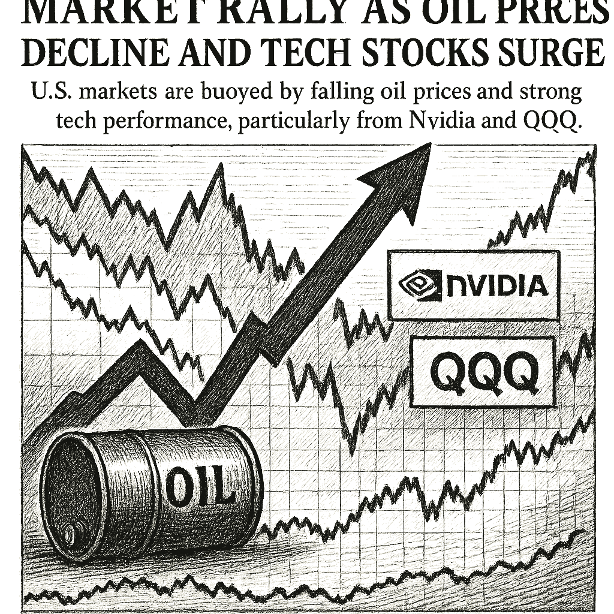
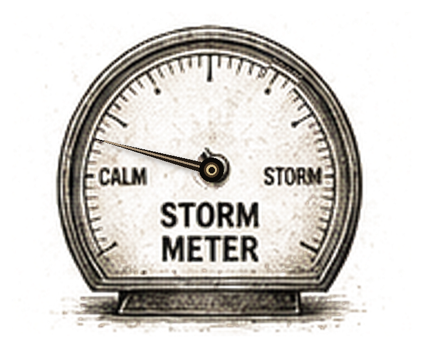

SPY
Current: $767.99Change: +7.11 (+0.93%)
Updated:
Source: yahoo_chartFreshness: fresh


U.S. markets are buoyed by falling oil prices and strong tech performance, particularly from Nvidia and QQQ.

Today's Headline: Market Rally as Oil Prices Decline and Tech Stocks Surge
Setup: U.S. markets are buoyed by falling oil prices and strong tech performance, particularly from Nvidia and QQQ.
Primary Topic: Market Performance
Specific Development: The Dow Jones index has rallied significantly, driven by a drop in oil prices and gains in technology stocks.
Why Today Is Different: Today's rally marks a notable shift as oil prices decline sharply, providing relief to investors and boosting tech stocks like Nvidia.
Secondary Topics: Oil Prices; Technology Sector
Tone: Optimistic
Sectors: Technology; Energy
Companies: Nvidia; Micron
Commodities: Oil
Countries Or Regions: United States
Macro Themes: Market Recovery; Energy Prices
Why This Story: The interplay between declining oil prices and rising tech stocks is reshaping market dynamics, indicating a potential shift in investor sentiment.
Why This Matters: Nvidia and Micron are part of Zacks Earnings Preview is the clearest current evidence-led frame for Joshua's observation-only review; missing facts remain explicit intelligence gaps.

Summary: U.S. markets are experiencing a rally with the Dow up significantly as oil prices decline. Tech stocks, particularly Nvidia, are leading the charge.
What Happened Overnight: U.S. futures rose sharply as oil prices fell, boosting investor sentiment.
What Changed Materially: The significant drop in oil prices has shifted market dynamics positively.
Which Assets Sectors Are Affected: Tech Stocks; Energy Sector
Does It Look Like Noise Or A Real Regime Input: This appears to be a real regime input, given the substantial movements in oil and tech stocks.
Why This Matters: Joshua can use verified cross-asset moves and deterministic risk context while keeping causation explicitly unresolved.

No high-priority earnings expectation block is supported by the current canonical snapshot.

- WOPR learning pipeline: Learning present — untrusted
- Candidates evaluated 24h: 0
- Current gate: Learning trust
- Notification ledger events in 24h: 3
- Pending orders created/canceled/filled/expired: 0/0/0/0
- Pending lifecycle interpretation: Pending-order cancellations have trackable reasons and no obvious rapid churn pattern.
- Portfolio risk: Label: High / Score: 100.0
- Latest intelligence gap report: intelligence_gap_report_2026-09-20.pdf
Why This Matters: The active gate is Learning trust, so the key question is why candidates are stopping before approval, not how to force trades.

- Sentinel role: infrastructure and operational status only.
- State: ONLINE
- Last successful validation: 2026-09-21T14:15:54.731475+00:00
- Payloads accepted/rejected: 20406/0
- Node health score: 100
Why This Matters: Sentinel is ONLINE, so Joshua should use its context only to the extent the latest accepted pulse is fresh and authenticated.

CANDIDATES MOVING THROUGH JOSHUA'S INVESTMENT-REVIEW WORKFLOW
FROZEN DAILY BRIEF SNAPSHOT | 2026-09-21T14:10:30.219957+00:00
QUEUE SUMMARY | Investment Ready: 0 | Waiting for Price: 0 | Waiting for Evidence: 3 | Research Underway: 1 | Governance Hold: 3 | Monitor Only: 0
Investment-ready status: No candidates are currently Investment Ready.
#7 NVDA - Waiting for Evidence [Moved Up 8->7]
Joshua's Thesis: Positive thesis not yet established.
Why Waiting: Positioning gate failed.
Price: 223.21 now; 223.30 preferred entry
What Unlocks It: Clear valuation support; Evidence that the business quality matches the risk being taken; Independent evidence streams pointing the same way
Portfolio Fit: 0.0/100 — VERY LOW
Portfolio Fit Drivers: projected Technology exposure 80.0%; projected AI infrastructure exposure 80.0%; candidate amount $100 vs $25 currently allocated
Candidate Risk: 100.0/100 — VERY HIGH
Risk Drivers: projected Technology exposure 80.0%; projected AI infrastructure exposure 80.0%; candidate amount $100 vs $25 currently allocated
Next: Positioning status must no longer be warning. Owner: Joshua.
#9 AVGO - Research Underway [Moved Down 6->9]
Joshua's Thesis: Positive thesis not yet established.
Why Waiting: Research evidence is still being gathered.
Price: 357.17 now; 370.11 preferred entry
What Unlocks It: Clear valuation support; Evidence that the business quality matches the risk being taken; Independent evidence streams pointing the same way
Portfolio Fit: 0.0/100 — VERY LOW
Portfolio Fit Drivers: projected Technology exposure 80.0%; projected AI infrastructure exposure 80.0%; candidate amount $100 vs $25 currently allocated
Candidate Risk: 100.0/100 — VERY HIGH
Risk Drivers: projected Technology exposure 80.0%; projected AI infrastructure exposure 80.0%; candidate amount $100 vs $25 currently allocated
Next: Fill before expires_at while entry conditions remain valid. Owner: Columbo.
#11 QBTS - Waiting for Evidence [Moved Down 10->11]
Joshua's Thesis: Positive thesis not yet established.
Why Waiting: Waiting for the preferred entry price.
Price: 17.75 now; 20.10 preferred entry
What Unlocks It: Clear valuation support; Evidence that the business quality matches the risk being taken; Independent evidence streams pointing the same way
Portfolio Fit: 0.0/100 — VERY LOW
Portfolio Fit Drivers: projected Unclassified exposure 100.0%; projected Unclassified exposure 100.0%; candidate amount $100 vs $25 currently allocated
Candidate Risk: 100.0/100 — VERY HIGH
Risk Drivers: projected Unclassified exposure 100.0%; projected Unclassified exposure 100.0%; candidate amount $100 vs $25 currently allocated
Next: Fill before expires_at while entry conditions remain valid. Owner: Joshua.
#17 ANGX - Governance Hold
Joshua's Thesis: Positive thesis not yet established.
Why Waiting: Governance gate has not cleared.
Price: 5.20 now; 4.88 preferred entry
What Unlocks It: Governance gate clears; Clear valuation support; Evidence that the business quality matches the risk being taken
Portfolio Fit: 0.0/100 — VERY LOW
Portfolio Fit Drivers: projected Unclassified exposure 100.0%; projected Unclassified exposure 100.0%; candidate amount $100 vs $25 currently allocated
Candidate Risk: 100.0/100 — VERY HIGH
Risk Drivers: projected Unclassified exposure 100.0%; projected Unclassified exposure 100.0%; candidate amount $100 vs $25 currently allocated
Next: Re-evaluate after the recorded gate clears. Owner: Advisory Committee.
#18 PLTR - Governance Hold [Moved Up 20->18]
Joshua's Thesis: Positive thesis not yet established.
Why Waiting: Governance gate has not cleared.
Price: 181.40 now; 179.49 preferred entry
What Unlocks It: Governance gate clears; Clear valuation support; Evidence that the business quality matches the risk being taken
Portfolio Fit: 0.0/100 — VERY LOW
Portfolio Fit Drivers: projected Technology exposure 80.0%; projected AI software exposure 80.0%; candidate amount $100 vs $25 currently allocated
Candidate Risk: 100.0/100 — VERY HIGH
Risk Drivers: projected Technology exposure 80.0%; projected AI software exposure 80.0%; candidate amount $100 vs $25 currently allocated
Next: Re-evaluate after the recorded gate clears. Owner: Columbo.
#19 SPCX - Governance Hold
Joshua's Thesis: Positive thesis not yet established.
Why Waiting: Governance gate has not cleared.
Price: 155.09 now; 149.14 preferred entry
What Unlocks It: Governance gate clears; Clear valuation support; Evidence that the business quality matches the risk being taken
Portfolio Fit: 0.0/100 — VERY LOW
Portfolio Fit Drivers: projected Unclassified exposure 100.0%; projected Unclassified exposure 100.0%; candidate amount $100 vs $25 currently allocated
Candidate Risk: 100.0/100 — VERY HIGH
Risk Drivers: projected Unclassified exposure 100.0%; projected Unclassified exposure 100.0%; candidate amount $100 vs $25 currently allocated
Next: Re-evaluate after the recorded gate clears. Owner: Advisory Committee.
#24 IONQ - Waiting for Evidence [NEW]
Joshua's Thesis: Positive thesis not yet established.
Why Waiting: Evidence quality is insufficient.
Price: 40.48 now; 42.54 preferred entry
What Unlocks It: Clear valuation support; Evidence that the business quality matches the risk being taken; Independent evidence streams pointing the same way
Portfolio Fit: 0.0/100 — VERY LOW
Portfolio Fit Drivers: projected Unclassified exposure 100.0%; projected Unclassified exposure 100.0%; candidate amount $100 vs $25 currently allocated
Candidate Risk: 100.0/100 — VERY HIGH
Risk Drivers: projected Unclassified exposure 100.0%; projected Unclassified exposure 100.0%; candidate amount $100 vs $25 currently allocated
Next: Data confidence must reach at least 34/100. Owner: Joshua.
Observation only. This section creates no recommendation, order, authority, or execution instruction.

- If NVDA reaches the recorded price condition <= 223.3, which recorded evidence and governance requirements would still remain?
- If AVGO reaches the recorded price condition <= 370.11, which recorded evidence and governance requirements would still remain?
- If QBTS reaches the recorded price condition <= 20.1, which recorded evidence and governance requirements would still remain?
- Which recorded governance requirement must clear before ANGX can advance?

The market rally is primarily driven by falling oil prices, which alleviates inflationary pressures and boosts investor sentiment. Tech stocks are benefiting significantly, particularly Nvidia, which is gaining traction ahead of its earnings report. This shift could indicate a broader market recovery, but caution is warranted as external factors may still influence volatility.

Compared to: 2026-09-18
- Market weather: Still Elevated
- Top opportunity: Still DELL
- Joshua gate: Still Learning trust
- 2Y Treasury.last_price: 4.67 -> 4.76 (up); 2Y Treasury.last_price changed 1.93% versus the prior frozen Chronicle snapshot.
- 2Y Treasury.percent_change: -1.4767932489451536 -> 1.9271948608137013 (up); 2Y Treasury.percent_change changed 230.50% versus the prior frozen Chronicle snapshot.
- 10Y Treasury.last_price: 4.94 -> 5.01 (up); 10Y Treasury.last_price changed 1.42% versus the prior frozen Chronicle snapshot.
- 10Y Treasury.percent_change: -1.3972055888223434 -> 1.4170040485829836 (up); 10Y Treasury.percent_change changed 201.42% versus the prior frozen Chronicle snapshot.
- 30Y Treasury.last_price: 5.29 -> 5.34 (up); 30Y Treasury.last_price changed 0.95% versus the prior frozen Chronicle snapshot.
- 30Y Treasury.percent_change: -1.1214953271027965 -> 0.9451795841209797 (up); 30Y Treasury.percent_change changed 184.28% versus the prior frozen Chronicle snapshot.
- SPY.last_price: 759.21 -> 767.985 (up); SPY.last_price changed 1.16% versus the prior frozen Chronicle snapshot.
- SPY.percent_change: -0.6646691700794106 -> 0.9337871937756306 (up); SPY.percent_change changed 240.49% versus the prior frozen Chronicle snapshot.
- QQQ.last_price: 716.51 -> 733.31 (up); QQQ.last_price changed 2.34% versus the prior frozen Chronicle snapshot.
- QQQ.percent_change: 0.22801029543419812 -> 3.4025212216926586 (up); QQQ.percent_change changed 1392.27% versus the prior frozen Chronicle snapshot.
- IWM.last_price: 282.97 -> 285.61 (up); IWM.last_price changed 0.93% versus the prior frozen Chronicle snapshot.
- IWM.percent_change: -2.049222887604264 -> -0.7988607550970828 (up); IWM.percent_change changed 61.02% versus the prior frozen Chronicle snapshot.

The substantial decline in oil prices has shifted the market sentiment positively, prompting a reassessment of investment strategies.
No new warnings; previous concerns about oil prices have been alleviated.
Portfolio Construction Review
Current allocation: 25.0 allocated.
Largest sector: Unclassified at 100.0%.
Largest theme: Unclassified at 100.0%.
Diversification: Concentrated (0.0).
Cash allocation: 97.5% unallocated.
Recommended exposure: DELL at portfolio-fit score 0.0.
Portfolio fit: DELL has strong standalone evidence, but it increases portfolio concentration.
Why This Matters: Portfolio Manager evaluates whether an opportunity improves this portfolio; it does not select the investment, vote, or authorize execution.

Monitor the interplay between oil prices and tech stock performance as key indicators of market sentiment.

| Can trigger trade | no |
| Can modify trade rules | no |
| Can add watch items | yes |
| Can add review questions | yes |
| Can adjust confidence notes | yes |
| Input policy | external_intelligence_plus_sanitized_internal_observations |
| External policy | The Editor-in-Chief synthesizes current world/market context where available and labels unknowns; provider/model provenance remains separate. |
| Internal policy | Joshua/WOPR/Sentinel facts are supplied as sanitized observation-only summaries. |
| Editorial model | gpt-4o-mini |
- Selected by a deterministic daily rotation through symbols already present in the persisted Chronicle snapshot.
- Committee status: watch; confidence: 79.1.
- Next recorded catalyst: Advance Report on Durable Goods--Manufacturers' Shipments, Inventories, and Orders.
- Wall St futures rise as AI stocks gain, oil prices slide - Reuters
- Desk: commodity; source: Reuters; linked symbols: none recorded.
- Published: 9/21/26 02:42 MST.
- High-impact watch: Advance Report on Durable Goods--Manufacturers' Shipments, Inventories, and Orders - 9/25/26 05:30 MST.
- Affected assets: US equities, Treasuries, USD; source: census_release_schedule.
- MU earnings: September 30, 2026, after close.
- Technology: 4.39% session performance; source: persisted sector ledger.
- Health Care: 0.39% session performance; source: persisted sector ledger.
- Industrials: -0.53% session performance; source: persisted sector ledger.
- VIX: -13.60% recorded move; price: 14.86.
- Session: regular; catalyst status: possible; source: yahoo_chart.
- Oil Prices; why it matters: Falling oil prices can lead to reduced inflationary pressures, positively impacting market sentiment.
- State: broad_weakness; score: 8.80/100; advance/decline ratio: 0.27.
- Above 50-day average: 25.20%; sample: 119; provider: sentinel_sampled_breadth.
- Decision outcomes evaluated: 16; currently untestable: 0.
- Warning review: still watching 3, unconfirmed 1; confidence calibration: insufficient_sample.
- Current macro regime: defensive_rotation; change probability: unavailable.
- Risk dashboard: cautious (62/100); breadth: broad_weakness; sentiment: neutral.
- Scenario board only - a current-state observation, not a forecast or execution instruction.
- Built Berkshire Hathaway into a major conglomerate while becoming the best-known practitioner of long-term value investing.
- Published quotation: "Price is what you pay. Value is what you get."
- Published framework: Treat shares as fractional ownership of businesses. Favor understandable companies with durable advantages, capable management, strong cash economics, and a sensible price; then let compounding work over long periods.
- Committee lens: Buffett supplies the durable-business and capital-allocation lens: is the asset understandable, defensible, well managed, and worth owning beyond the next market move?
- Public philosophy profile only; no participation, endorsement, or current recommendation is implied.
- If NVDA reaches the recorded price condition <= 223.3, which recorded evidence and governance requirements would still remain?
- DELL: No canonical symbol-specific material event is linked.
- Attach the missing DELL evidence before the next committee review.
- If NVDA reaches the recorded price condition <= 223.3, which recorded evidence and governance requirements would still remain?
- If AVGO reaches the recorded price condition <= 370.11, which recorded evidence and governance requirements would still remain?
- If QBTS reaches the recorded price condition <= 20.1, which recorded evidence and governance requirements would still remain?
- Which recorded governance requirement must clear before ANGX can advance?
- Evidence agenda: DELL - No canonical symbol-specific material event is linked.
- Proposed review: Tech Earnings; why it matters: Strong earnings from tech companies can drive market rallies and investor confidence.
- Canonical instruments reviewed: 24; delayed 3, fresh 18, stale 3.
- Leading sources: yahoo_chart (21), treasury_official_yield_curve (3).
- Snapshot recorded: 9/21/26 07:15 MST.
Market Rally as Oil Prices Decline and Tech Stocks Surge
Storm meter: Calm
#7 NVDA - Waiting for Evidence [Moved Up 8->7]
Observation mode: observation_only
Watch: Oil Prices; why it matters: Falling oil prices can lead to reduced inflationary pressures, positively impacting market sentiment.
Question: If NVDA reaches the recorded price condition <= 223.3, which recorded evidence and governance requirements would still remain?